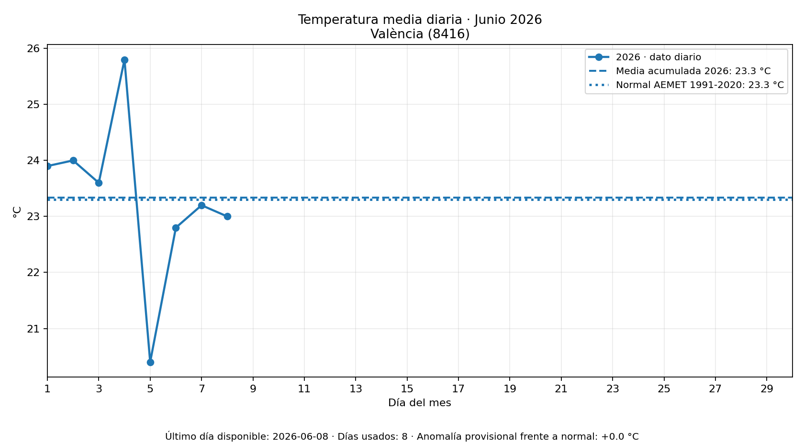
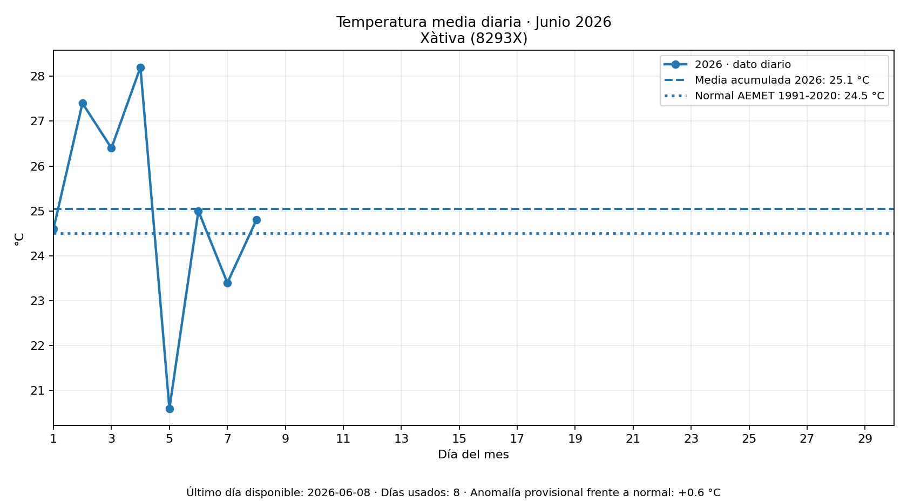

Temperatura media mensual
23.3Media actual °C
23.3Normal 1991-2020 °C
+0.0Anomalía °C

Último día disponible: 2026-06-08 · Días usados: 8
Periodo: Junio 2026
Referencia: normal climática oficial AEMET 1991-2020 del mismo mes
Variables: Temperatura media mensual
Actualización del visor: 11/06/2026 21:49 hora peninsular

Último día disponible: 2026-06-08 · Días usados: 8

Último día disponible: 2026-06-08 · Días usados: 8
Fuente: AEMET OpenData. Elaboración automática. La línea de referencia usa la normal climática oficial AEMET 1991-2020; la media actual es provisional y se calcula con los días diarios disponibles del mes en curso.